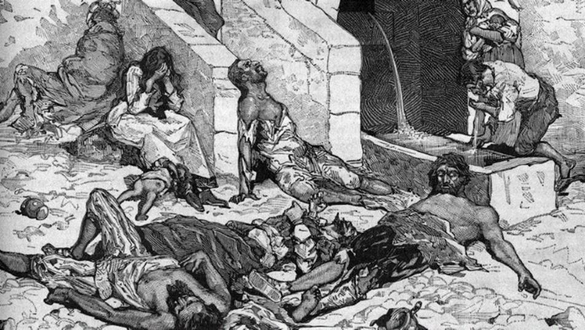
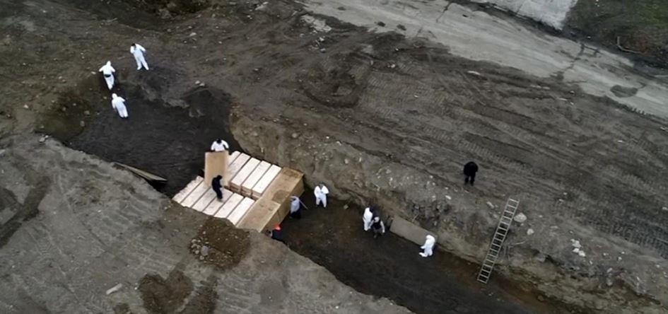

Au-delà de nos humeurs, craintes, convictions, réactions, consentement, toutes choses étant de l’ordre de l’opinion, il convient d’aller à l’essentiel. C’est-à-dire, qu’au-delà des apparences, ce que le poète nomme bellement « le clapotis des causes secondes », revenir à l’être des choses. En-deçà des « médiations », de ces évidences déversées ad nauseam par l’intelligentsia, revenir à ce qui est immédiatement évident. Ce que la sagesse populaire a su formuler d’une manière lapidaire : tout passe, tout casse, tout lasse !
En la matière fin d’une Modernité en bout de course. Saturation d’un ensemble de valeurs de plus en plus désuètes.
Rappelons-nous, ici, d’une des étymologies du terme crise : « krisis » comme le jugement porté par ce qui est en train de naître sur ce qui est en train de mourir. Cela, on l’oublie trop souvent, en réduisant la crise à son aspect économique. Simple dysfonctionnement de ce que mon regretté ami, Jean Baudrillard, nommait « la société de consommation »., que quelques ajustements d’ordre politique ne manqueraient pas de corriger pour le plus grand bien de tous.
C’est ainsi que l’on peut comprendre la « crise sanitaire » comme une modalité d’une crise sociétale en cours, d’un changement de paradigme bien plus profond.
En d’autres termes, la crise sanitaire comme expression visible d’une dégénérescence invisible. Dégénérescence d’une civilisation ayant fait son temps. Civilisation dont le paradigme n’est plus reconnu. La matrice de l’être-ensemble est devenue inféconde.
Le rationalisme à courte vue peut concéder qu’il s’agit là d’une allégorie quelque peu mystérieuse, voire mystique. Mais l’histoire ne manque pas d’exemples en ce sens. Il y en a même à foison. Je me contente de rappeler la grande peste corrélative de la fin de l’Empire romain. La fameuse peste « antonine » en 190, tout en causant des millions de morts marqua le début de la décadence romaine.

Une gravure antique montrant les corps de personnes victimes de la peste antonine
Et que dire de la « peste noire », appelée également « mort noire » qui au XIVème siècle fut corollaire de la fin du Moyen-Âge ? La Renaissance devait lui succéder. Ce que les historiens nomment Black Death exprime bien le deuil qu’il convenait de faire vis-à-vis d’un ensemble de valeurs n’étant plus en adéquation avec un nouvel esprit du temps en gestation.
Terminons-en avec la métaphore. Mais voilà fort longtemps qu’avec quelques autres, tout en subissant les foudres d’une intelligentsia apeurée, je pointe, souligne, analyse la décadence de la modernité.
La fin d’un monde n’étant plus défendu que par des castes fières de leur supériorité illusoire continuant à seriner leurs fallacieuses élucubrations. Il s’agit là d’une « société officielle » de plus en plus déconnectée de la vie réelle. Et donc incapable de voir la dégénérescence intellectuelle, politique dont les symptômes sont de plus en plus évidents.
Dégénérescence de quoi, sinon du mythe progressiste ? J’avais montré dès 1979 que corrélativement à l’idéologie du service public, ce progressisme s’employait à justifier la domination sur la nature, à négliger les lois primordiales de celle-ci et à construire un monde selon les seuls principes d’un rationalisme dont l’aspect morbide apparaît de plus en plus évident. La Violence totalitaire d’un progressisme à la fois benêt et destructeur.
J’ai dit qu’il convenait de s’attacher à l’essentiel. Le point nodal de l’idéologie progressiste, c’est l’ambition voire la prétention de tout résoudre, de tout améliorer afin d’aboutir à une société parfaite et à un homme potentiellement immortel.
Qu’on le sache ou non, la dialectique, thèse, antithèse, synthèse est le mécanisme intellectuel dominant. Le concept hégélien de « dépassement » (Aufhebung), est le maître mot de la mythologie progressiste. C’est stricto sensu, une conception du monde « dramatique », c’est-à-dire reposant sur la capacité à trouver une solution, une résolution à ce qui peut faire obstacle à la perfection à venir.
Il est une formule de K. Marx qui résume bien une telle mythologie : chaque société ne se pose que les problèmes qu’elle peut résoudre. Ambition, prétention de tout maîtriser. C’est l’économie du salut ou l’histoire du salut d’obédience judéo-chrétienne qui, dans les grands systèmes socialisant du XIXe siècle deviennent « profanes », et vont inspirer tous les programmes politiques, gauche et droite confondues.
C’est bien cette conception dramatique, donc optimiste qui est en train de s’achever. Et, dans le balancement inexorable des histoires humaines, c’est « le sentiment du tragique de la vie » (Miguel de Unanumo) qui à nouveau, tend à prévaloir. Le dramatique, je l’ai dit, est résolument optimiste. Le tragique est aporique, c’est-à-dire sans solution. La vie est ce qu’elle est.
Plutôt que de vouloir dominer la nature, on s’accorde à elle. Selon l’adage populaire, « on ne commande bien la nature qu’en lui obéissant ». La mort, dès lors, n’est plus ce que l’on pourra dépasser. Mais ce avec quoi il convient de s’accorder.
Voilà ce que rappelle, en majeur, la « crise sanitaire ». La mort pandémique est le symbole de la fin de l’optimisme propre au progressisme moderne. On peut le considérer comme une expression du mystique pressentiment que la fin d’une civilisation peut être une délivrance et, en son sens fort, l’indice d’une renaissance. « Index », ce qui pointe la continuité d’un vitalisme essentiel !
La mort possible, menace vécue quotidiennement, réalité que l’on ne peut pas nier, que l’on ne peut plus dénier, la mort qu’inexorablement l’on est obligé de comptabiliser, cette mort, omniprésente, rappelle dans sa concrétude que c’est un ordre des choses qui est en train de s’achever.

Avril 2020, des fosses communes pour les morts non réclamés à New-York (USA)
Ce qui est concret, je le rappelle : cum crescere, c’est ce qui « croît avec », avec un réel irréfragable. Et ce réel, c’est peut-être ? réellement ? la mort de cet « ordre des choses » ayant constitué le monde moderne !
Mort de l’économicisme dominant, de cette prévalence de l’infrastructure économique d’origine marxiste, cause et effet d’un matérialisme à courte vue. Outre la « société de consommation », Jean Baudrillard a fort bien montré en quoi toute la vie sociale n’était qu’un « miroir de la production ». Ce qui est la réduction d’un être-ensemble essentiel à un « étant » on ne peut plus abstrait, uniquement préoccupé par le matériel que l’on ne maîtrise plus. On ne possède plus les objets, l’on est possédé par eux !
Mort d’une conception purement individualiste de l’existence. Certes, les élites déphasées continuent à émettre des poncifs du type « compte tenu de l’individualisme contemporain », et autres sornettes de la même eau. Mais l’angoisse de la finitude, finitude dont on ne peut plus cacher la réalité, incite, tout au contraire, à rechercher l’entraide, le partage, l’échange, le bénévolat et autres valeurs du même acabit que le matérialisme moderne avait cru dépasser.
Même «confinés » dans leur appartement, il est intéressant de noter que les chants patriotiques ou celui du répertoire populaire, sont repris en commun. Et ce afin de conjurer, collectivement l’angoisse propre au sentiment de finitude et, ainsi, d’exprimer la solidarité devant la mort.
Encore plus flagrant, la crise sanitaire signe la mort de la mondialisation, valeur dominante d’une élite qui, toutes tendances confondues, reste obnubilée par un marché sans limite, sans frontière où, là encore, l’objet prévaut sur le sujet, le matériel sur le spirituel.
Souvenons-nous de la judicieuse expression du philosophe Georg Simmel, rappelant que le bon équilibre de toute vie sociale est l’accord devant exister entre le « pont et la porte ». Le pont nécessaire à la relation, et la porte relativisant cette relation afin d’accéder à une harmonie bénéfique pour tout un chacun.
Cette mondialisation à outrance est, c’est difficile à le reconnaître, l’héritage de l’Universalisme propre à la philosophie des Lumières du XVIIIe siècle. Et la saturation d’un tel état de choses va valoriser le localisme. Ce que l’École de Palo Alto, en Californie, a nommé avec justesse, la « proxémie ». C’est-à-dire l’interaction existant entre l’environnement naturel et l’environnement social.
Ce que j’ai appelé « Ecosophie », sagesse de la maison commune, ou, en termes plus familiers, reconnaître que « le lieu fait lien ». Toutes choses rappelant qu’à l’encontre du leitmotiv marxiste : « l’air de la ville rend libre », formule archétype du déracinement, la glèbe natale retrouve une force et vigueur indéniables.
Enracinement dynamique rappelant que, comme toute plante, la plante humaine a besoin de racines pour pouvoir croître, avec force, justesse et beauté ! Ainsi face à la mort on ne peut plus présente, est rappelé la nécessité de la solidarité propre à un « idéal communautaire » que certains continuent à stigmatiser en le taxant, sottement, de communautarisme.
Certains ? Qui sont-ils ? Tout simplement ceux qui ayant le pouvoir de dire et de faire, continuent à défendre bec et ongles l’économicisme, l’individualisme, le mondialisme, le matérialisme dont il a été question.
Le jardin communautaire les Arpents Verts de Magog
La consanguinité des élites est chose évidente. Leur endogamie est chose mortifère. Cet entre-soi est, on ne peut plus, manifeste dans les poncifs moraux dont les oligarques se gargarisent. Lieux-communs cachant mal, leur culte atavique de l’argent, leur orthodoxie économiciste et leur célébration d’une échelle de valeurs de fait dépassée. Tout ceci à coup d’incantations : démocratie, valeurs républicaines, laïcité, progressisme, etc.
Tout cela s’exprimant dans des formules alambiquées où les esprits aigus et le bon sens populaire repèrent aisément les amphibologies et les cercles vicieux. Formules stéréotypées ne traduisant que l’essence de leurs pratiques et le fondement de leur désir profond, celui d’une « suradministration » leur assurant un pouvoir indépassable sur un peuple indécrottablement débile.
Ces élites ayant oublié que commander c’est servir. Ce que traduit l’adage exprimant au mieux la cohésion sociale : regnare servire est. En bref, l’équilibre devant exister entre la puissance de l’instituant et le pouvoir de l’institué, c’est-à-dire des institutions économiques, politiques, sociales.
C’est parce qu’elles ne saisissent pas que la mort quotidienne, se rappelant à notre bon souvenir, signe inéluctablement, la mort de la matérialiste civilisation moderne, qu’il va y avoir ce que le sociologue Vilfredo Pareto nommait, justement, la circulation des élites.
Circulation qui, Internet aidant, prend acte de la mort de la verticalité du pouvoir au profit de l’horizontalité de la puissance sociétale. Je l’ai souvent rappelé, la postmodernité n’est rien d’autre que la synergie de l’archaïque et du développement technologique. Autre manière de dire le retour du partage, de l’échange, de la solidarité et autres valeurs premières, fondamentales que la paranoïa des élites modernes avait cru, dialectique aidant, pouvoir « dépasser ».
La mort de la civilisation utilitariste où le lien social est à dominante mécanique, permet de repérer la réémergence d’une solidarité organique. Organicité que la pensée ésotérique nomme « synarchie ». Ce qu’avait également bien analysé Georges Dumézil en rappelant l’interaction et l’équilibre existant, à certains moments, entre les « trois fonctions sociales ».
La fonction spirituelle, fondant le politique, le militaire, le juridique et aboutissant à la solidarité sociétale. Ainsi, au-delà de la suradministration déconnectée du Réel, c’est bien un tel holisme que l’on voit resurgir de nos jours.
Mais la prise en compte d’une telle synarchie organique nécessite que l’on sache le dire avec les mots étant le plus en pertinence avec le temps. Il est amusant, il vaudrait mieux dire désolant, de lire sous la plus d’un éditorialiste bien en cour, que la situation est dramatique et quelques lignes plus loin parler de son aspect tragique.
La formule de Platon, toujours d’actualité : « la fraude aux mots », est le signe inéluctable d’une dégénérescence achevée. La conception « dramatique » est le propre d’une élite croyant trouver à tout une solution opportune. Le « tragique », bien au contraire, s’accorde à la mort. Il sait, d’un savoir incorporé, savoir propre à la sagesse populaire, vivre la mort de tous les jours.
Voilà en quoi la crise sanitaire porteuse de mort individuelle est l’indice d’une crise civilisationnelle, celle de la mort du paradigme progressiste ayant fait son temps. Peut-être est-ce cela qui fait que le tragique ambiant, vécu au quotidien, est loin d’être morose, conscient qu’il est d’une résurrection en cours. Celle où dans l’être-ensemble, dans l’être avec, dans le visible social, l’invisible spirituel occupera une place de choix.
M.M.
« Méthode » vous recommande l’ouvrage de notre ami le Professeur Michel Maffesoli et d’Hélène Strohl
Partager cette page